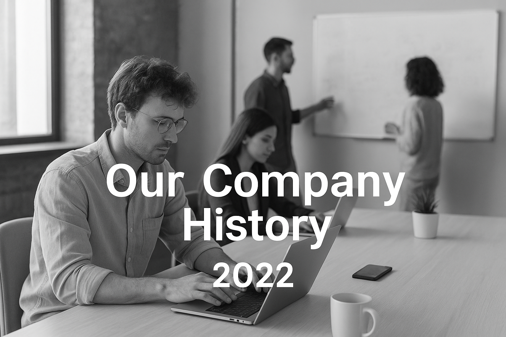
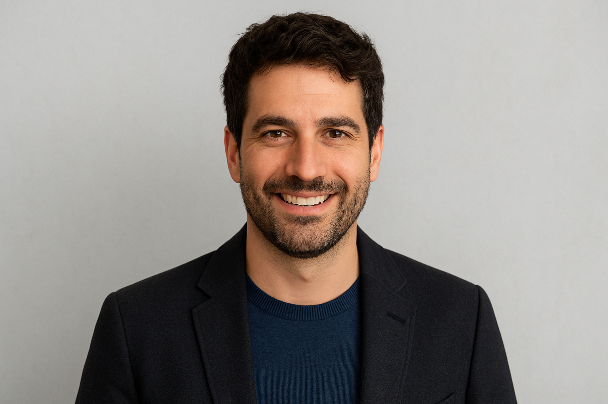

History
At TechCon, our journey began with a simple but powerful vision: to create technology that
empowers people and transforms industries. Founded in 2022, we started as a small team of passionate
engineers and designers driven by curiosity and a commitment to solve real-world problems through
innovation.
What began as a modest startup has grown into a dynamic technology company delivering solutions across
software development, digital transformation, cloud technologies, and AI-driven platforms. Over the
years, we've expanded our reach globally, partnered with forward-thinking organizations, and built a
culture rooted in excellence, creativity, and continuous learning.

Mission
Our mission is to build innovative, human-centered technology that empowers businesses, accelerates
growth, and creates meaningful digital experiences. We are committed to delivering solutions that are
reliable, scalable, and impactful—driven by creativity, guided by data, and grounded in integrity.
Past Speakers
Dr. Maya Redwood — AI Ethics Researcher & Founder, Redwood Intelligence Lab
Dr. Redwood is globally recognized for her pioneering work in ethical artificial intelligence, helping
major companies develop transparent and responsible AI systems. She led one of the earliest frameworks
for bias-free machine learning, which is now referenced by institutions worldwide. She delivered a
keynote in 2023, speaking on “Building Trustworthy AI for the Next Decade.”
Engr. Lucas Bamidele — Cloud Architect & CTO, NimbusStack Technologies

Engr. Bamidele has transformed cloud computing in Africa by creating NimbusStack, a platform that offers
scalable and affordable cloud solutions for startups and enterprises. He is widely known for his
contributions in distributed systems, cloud automation, and DevOps modernization.He spoke at the 2024
conference, presenting “Scaling Innovation Through Cloud-Native Architecture.”